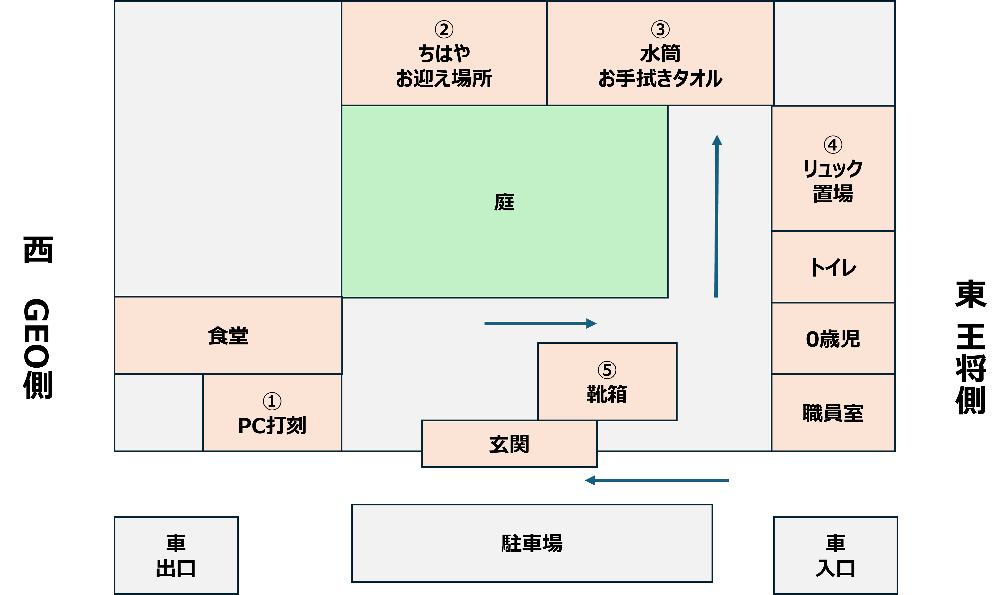

横田保育園 お迎え手順
時間：16:30〜17:00
電話番号：0948-22-1329
住所：〒820-0044 福岡県飯塚市横田351-1
Google Mapで開く
間取り図

画像ファイルが未配置の場合は表示されません。
手順
① 入口でPC打刻（図の①）
入口の左側にあるパソコンで、退勤打刻をしてください。
2歳児 → 川島知隼 → 退室
② 知隼をピックアップ（図の②）
廊下を奥に進み、2歳児クラスで知隼を迎えてください。
(2) 知隼がいる場所のお手拭きタオルを取る
知隼がいる場所にお手拭きタオルが掛かってあるので、取ってください。
③ 荷物を取る（図の③）
★マーク（廊下の右側）にある知隼の荷物を忘れずに取ってください。
荷物の場所は、顔写真か名前が書いてある場所を見て確認してください。
④ 知隼の靴を取る（迎え）
帰る前に、知隼の靴（名前が書いてあります）を忘れずに取ってください。
わからないとき
入口右側の事務室スタッフに声をかけてください。
迎え後の流れ
迎えに行ったら、以下に戻ってください。
住所：福岡県飯塚市立岩964-24 アルファスマート新飯塚駅東口801号室
Google Mapで開く
駐車場は1台あいているので、駐車場に停めて大丈夫です。